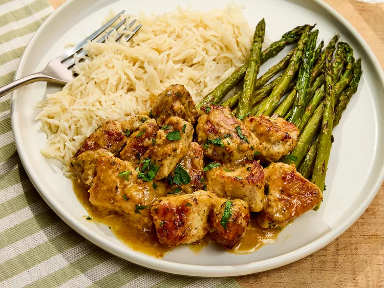

Garlic Chicken Bites

Description
This fast and flavorful recipe will take your weeknight chicken dinner to the next level. These tender, pan-seared chicken bites, coated in a rich garlic butter sauce with a touch of lemon, are perfect for tossing with pasta or serving alongside your favorite side dish. In just 25 minutes, you’ll have a delicious meal that’s sure to impress, even on the busiest nights.
Ingredients
- 1 pound boneless, skinless chicken breasts, cut into bite-sized pieces
- 2 tablespoons all-purpose flour
- 1 teaspoon kosher salt
- 1 teaspoon italian seasoning
- 2 tablespoons olive oil
- 1 tablespoon grated garlic (about 6 cloves)
- 1/4 cup dry white wine
- 4 tablespoons unsalted, cubed butter
- 1/2 tablespoon fresh lemon juice
- Chopped Parsely
Steps
- In a large bowl, combine the chicken, flour, salt, and Italian seasoning. Toss to coat the chicken evenly.
- In a large skillet over medium-high heat, heat the olive oil until shimmering. Add the chicken in a single layer and cook for 3-4 minutes without stirring until browned. Flip the chicken and cook for another 3-4 minutes until browned and cooked through. Remove the chicken from the skillet and set aside.
- Add the garlic to the skillet and sauté for 30 seconds until fragrant. Pour in the white wine and scrape up any browned bits from the bottom of the skillet. Let it simmer for 1-2 minutes until slightly reduced.
- Reduce the heat to low and add the butter, stirring until melted and combined. Stir in the lemon juice.
- Add the chicken back to the skillet, tossing to coat in the sauce. Cook for an additional minute to heat through.
- Serve immediately, garnished with chopped parsley if desired.
Home